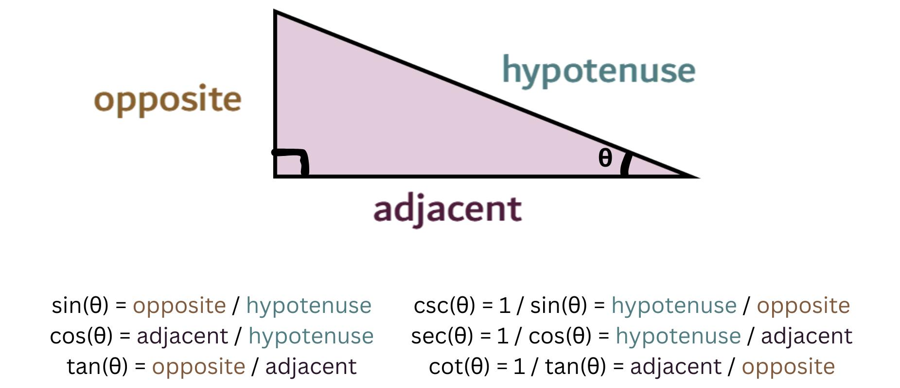
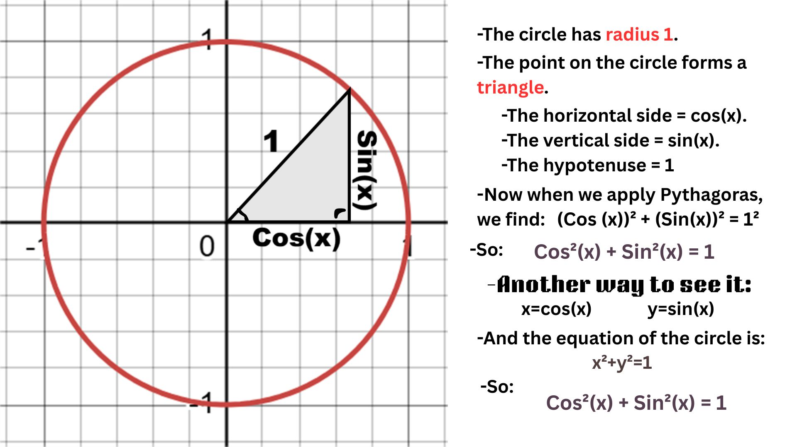

Trigonometry:
Trigonometry is the geometry of triangles and angles because it studies the relationship between them. This image represents a classic example of the relationship between angles and triangles in trigonometry (trigonometric ratios):

The importance of Trigonometry:
Ancient human knowledge of astronomy helped us understand the movement of stars, the moon, and planets. Scientists and astronomers accomplished the calculation the areas of the sky and the approximate positions of celestial bodies. They used trigonometric functions like sine (sin) and cosine (cos) to construct astronomical tables that helped them predict the moon's movements and the changing seasons. This knowledge also contributed to the development of navigation methods using stars for directions in mathematics. In our daily lives, trigonometry remains incredibly important, even if we don't always see it. It's used in building houses and bridges to determine angles and ensure structural stability, and in GPS navigation to accurately calculate directions and distances. It's also involved in the operation of phones, TVs, and the internet. Even in video games and animation, trigonometry is used to animate characters and render them realistically.
Understanding the Identity cos²(x) + sin²(x) = 1:
It comes from the Pythagorean theorem, which relates the squares of the sides of a right triangle and shows that the square of the hypotenuse is equal to the sum of the squares of the other two sides a² + b² = c².

